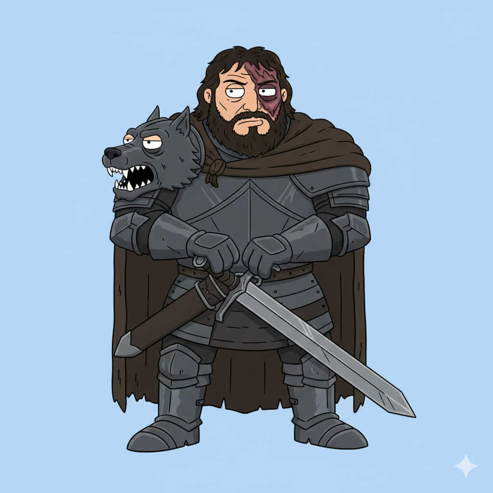

Sargon Clevarn
Historia
Sargon Clevarn nació en la fortaleza de Blackmaw, un lugar donde la fuerza y la brutalidad se valoran por encima de todo. Desde niño se le entrenó en combate extremo, soportando dolor y pruebas que habrían quebrado a cualquier otro. Su vida estuvo marcada por la violencia, y su reputación de guerrero implacable se consolidó desde joven. Sin embargo, tras años de enfrentamientos y saqueos, Sargon comenzó a cuestionar el propósito de su brutalidad, buscando un sentido más allá de la sangre y el miedo.
Con el tiempo, su fama como “el Cazador” trascendió más allá de las fronteras de Blackmaw, inspirando respeto y temor por igual. Aunque su lealtad a su casa es firme, Sargon ha demostrado que puede ser un aliado inesperado cuando los intereses coinciden, mostrando un lado más humano y complejo que pocos conocen. Su fuerza descomunal y su resistencia inhumana lo convierten en un personaje central en la guerra por Throonia, donde cada batalla es tanto física como estratégica.
Casa y relaciones
Casa: Blackmaw.
Familia: Linaje marcado por guerreros feroces y de reputación temible.
Aliados: Guerreros de Blackmaw y mercenarios leales.
Enemigos: Starfell, Targheris y cualquier casa que amenace la supremacía de Blackmaw.
Habilidades y personalidad
Fuerza descomunal - Combate brutal - Resistencia inhumana.
Personalidad feroz, directa y leal, aunque con un trasfondo de honor y capacidad de redención.